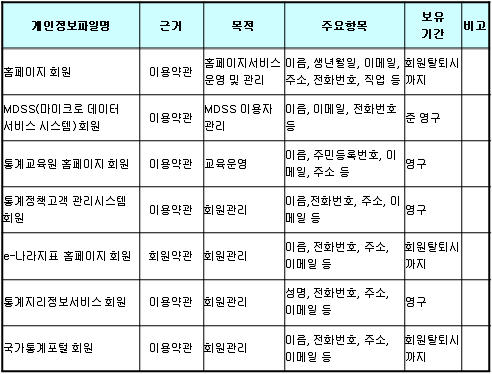
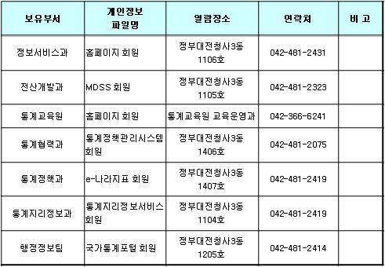
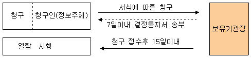
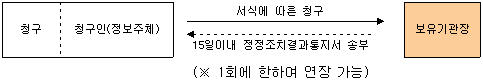
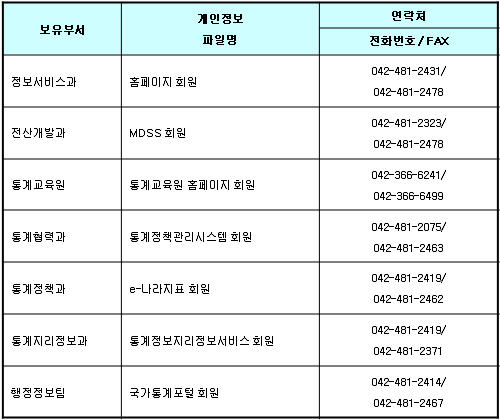

통계청이 취급하는 모든 개인정보는 관련법령에 근거하거나 정보주체의 동의에 의하여 수집·보유 및 처리되고 있습니다. 『공공기관의 개인정보보호에 관한 법률』은 이러한 개인정보의 취급에 대한 일반적 규범을 제시하고 있으며, 통계청은 이러한 법령의 규정에 따라 수집·보유 및 처리하는 개인정보를 공공업무의 적절한 수행과 국민의 권익을 보호하기 위해 적법하고 적정하게 취급할 것입니다.
또한, 통계청은 관련 법령에서 규정한 바에 따라 우리청에서 보유하고 있는 개인정보에 대한 열람청구권 및 정정청구권 등 여러분의 권익을 존중하며, 이러한 법령상 권익의 침해 등에 대하여 행정심판법에서 정하는 바에 따라 행정심판을 청구할 수 있습니다.
다음은 통계청의 개인정보보호방침을 설명 드리겠습니다. 우리청의 개인정보보호방침은 통계청이 운영하는 여러 홈페이지에서 이용자 여러분의 개인정보를 보호하기 위한 『홈페이지 이용자의 개인정보 보호』와 소관업무를 수행하는데 필요한 개인정보 취급에 대한 『컴퓨터에 의해 처리되는 개인정보 보호』 두 가지로 구성되어 있습니다.
홈페이지 이용자의 개인정보 보호
여기는 통계청 웹사이트입니다. 우리청 홈페이지의 이용에 대해 감사드리며, 홈페이지에서의 개인정보보호방침에 대하여 설명을 드리겠습니다. 이는 현행 『공공기관의 개인정보보호에 관한법률』 및 『공공기관의 개인정보보호를 위한 기본지침』에 근거를 두고 있습니다.
우리청에서 운영하고 있는 웹사이트는 다음과 같으며, 이 방침은 별도의 설명이 없는 한 우리청에서 운용하는 모든 웹사이트에 적용됨을 알려드립니다.
kostat.go.kr(통계청 홈페이지)
kosis.kr(국가통계포털)
sti.kostat.go.kr(통계교육원 홈페이지) 등
자동으로 수집·저장되는 개인정보
여러분이 우리청 홈페이지를 이용할 경우 다음의 정보는 자동적으로 수집·저장됩니다.
- 이용자 여러분의 인터넷서버 도메인과 우리 홈페이지를 방문할 때 거친 웹사이트의 주소
- 이용자의 브라우져 종류 및 OS
- 방문일시 등
위와 같이 자동 수집·저장되는 정보는 이용자 여러분에게 보다 나은 서비스를 제공하기 위해 홈페이지의 개선과 보완을 위한 통계분석, 이용자와 웹사이트 간의 원활한 의사소통 등을 위해 이용되어질 것입니다. 다만, 법령의 규정에 따라 이러한 정보를 제출하게 되어 있을 경우도 있다는 것을 유념하시기 바랍니다.
이메일 및 웹 서식 등을 통한 수집 정보
이용자 여러분은 우편, 전화 또는 온라인 전자서식 등을 통한 전자적 방법을 통해 의사를 표시할 수 있습니다. 이러한 방법의 선택에 있어 몇 가지 유의사항을 알려드립니다.
- 여러분이 홈페이지에 기재한 사항은 다른 사람들이 조회 또는 열람할 수도 있습니다.
- 여러분이 기재한 사항은 관련 법규에 근거하여 필요한 다른 사람과 공유될 수 있으며, 관련법령의 시행과 정책개발의 자료로도 사용될 수 있습니다.
- 또한, 이러한 정보는 타 부처와 공유되거나, 필요에 의하여 제공될 수도 있습니다.
홈페이지 보안을 위해 관리적·기술적 노력을 하고 있으나, 만약의 침해사고 시 문제가 될 수 있는 민감한 정보의 기재는 피하여 주시기 바랍니다.
웹사이트에서 운영하는 보안조치
홈페이지의 보안 또는 지속적인 서비스를 위해, 우리청은 네트워크 트래픽의 통제(Monitor)는 물론 불법적으로 정보를 변경하는 등의 시도를 탐지하기 위해 여러 가지 프로그램을 운영하고 있습니다.
링크 사이트·웹 페이지
통계청이 운영하는 여러 웹페이지에 포함된 링크 또는 배너를 클릭하여 다른 사이트 또는 웹페이지로 옮겨갈 경우 개인정보보호방침은 그 사이트 운영기관이 게시한 방침이 적용됨으로 새로 방문한 사이트의 방침을 확인하시기 바랍니다.
웹사이트 이용 중 다른 사람의 개인정보 취득
통계청이 운영하는 웹사이트에서 이메일 주소 등 식별할 수 있는 개인정보를 취득하여서는 아니 됩니다. 사위 기타 부정한 방법으로 이러한 개인정보를 열람 또는 제공받은 자는 『공공기관의 개인정보보호에 관한 법률』 제23조의 규정에 의하여 처벌을 받을 수 있습니다.
개인정보 침해사항의 신고
우리청의 웹사이트 이용 중 개인정보의 유출 가능성 등 정보주체의 권익이 침해될 우려가 있는 사실을 발견하였을 경우는 다음의 연락처로 알려주시기 바랍니다.
- 통계청 개인정보보호담당자 : 정보화기획과 배병식
· 전화번호 : 042-481-2326, Fax : 042-481-2474
· 주 소 : 우) 302-701 대전광역시 서구 선사로 139(둔산동 920번지) 정부대전청사
컴퓨터에 의해 처리되는 개인정보
개인정보의 수집 및 보유
우리청은 보유하고 있는 국민 여러분의 개인정보를 관계법령에 따라 적법하고 적정하게 처리하여, 권익이 침해받지 않도록 노력할 것입니다.
통계청은 법령의 규정과 정보주체의 동의에 의해서만 개인정보를 수집·보유합니다.
- 통계청이 정보주체의 동의에 의하여 보유하고 있는 개인정보파일은 다음과 같습니다.
개인정보의 이용 및 제공의 제한
통계청이 수집·보유하고 있는 개인정보는 일반 행정정보와 달리 이용 및 제공에 엄격한 제한이 있는 정보입니다. 『공공기관의 개인정보보호에 관한 법률』 제10조(이용 및 제공의 제한)는 이에 관하여 다음과 같이 규정하고 있습니다.
① 보유기관의 장은 다른 법률에 의하여 보유기관의 내부에서 이용하거나 보유기관외의 자에게 제공하는 경우를 제외하고는 당해 개인정보파일의 보유목적외의 목적으로 처리정보를 이용하거나 다른 기관에 제공하여서는 아니 된다.
② 보유기관의 장은 제1항의 규정에 불구하고 다음 각호의 1에 해당하는 경우에는 당해 개인정보파일의 보유목적외의 목적으로 처리정보를 이용하거나 다른 기관에 제공할 수 있다. 다만, 다음 각호의 1에 해당하는 경우에도 정보주체 또는 제3자의 권리와 이익을 부당하게 침해할 우려가 있다고 인정되는 때에는 그러하지 아니하다.
2. 다른 법률에서 정하는 소관업무를 수행하기 위하여 당해 처리정보를 이용할 상당한 이유가 있는 경우
3. 조약 기타 국제협정의 이행을 위하여 외국정부 또는 국제기구에 제공하는 경우
4. 통계작성 및 학술연구 등의 목적을 위한 경우로서 특정개인을 식별할 수 없는 형태로 제공하는 경우
5. 정보주체 또는 그 법정대리인이 의사표시를 할 수 없는 상태에 있거나 주소불명 등으로 동의를 할 수 없는 경우로서 정보주체외의 자에게 제공하는 것이 명백히 정보주체에게 이익이 된다고 인정되는 경우
6. 범죄의 수사와 공소의 제기 및 유지에 필요한 경우
7. 법원의 재판업무수행을 위하여 필요한 경우
8. 기타 대통령령이 정하는 특별한 사유가 있는 경우
③ 보유기관의 장은 제2항제2호 내지 제8호의 규정에 의하여 처리정보를 정보주체외의 자에게 제공하는 때에는 처리정보를 수령한 자에 대하여 사용목적·사용방법 기타 필요한 사항에 대하여 제한을 하거나 처리정보의 안전성확보를 위하여 필요한 조치를 강구하도록 요청하여야 한다.
④ 보유기관의 장은 정보주체의 권리와 이익을 보호하기 위하여 필요하다고 인정하는 때에는 처리정보의 이용을 당해 기관내의 특정부서로 제한할 수 있다.
⑤ 보유기관으로부터 제공받은 처리정보를 이용하는 기관은 제공기관의 동의 없이 당해 처리정보를 다른 기관에 제공하여서는 아니된다
그러나, 개인정보일지라도 공공기관의 정보공개에 관한 법률 제9조제1항제6호에 의하여 다음의 경우에는 공개가 가능합니다.
· 법령이 정하는 바에 따라 열람할 수 있는 정보
· 공공기관이 공표를 목적으로 작성하거나 취득한 정보로서 개인의 사생활의 비밀과 자유를 부당하게 침해하지 않는 정보
· 공공기관이 작성하거나 취득한 정보로서 공개하는 것이 공익 또는 개인의 권리구제를 위하여 필요하다고 인정되는 정보
· 직무를 수행한 공무원의 성명·직위
· 공개하는 것이 공익을 위하여 필요한 경우로써 법령에 의하여 국가 또는 지방자치단체가 업무의 일부를 위탁 또는 위촉한 개인의 성명·직업
통계청이 위 법령 및 기타 개별법에 근거하여 통상적으로 다른 기관에 제공하는 개인정보 현황은 없습니다.
우리청은 개인정보의 이용 및 제공에 있어 관계법령을 엄수하여 부당하게 이용되지 않도록 노력하겠습니다.
개인정보파일의 열람 및 정정 청구
다음의 개인정보파일은 『공공기관의 개인정보보호에 관한 법률』 관련법령의 규정이 정하는 바에 따라 열람을 청구할 수 있습니다.
- 열람청구 절차(『공공기관의 개인정보보호에 관한 법률』의 경우)
- 다음사항은 법 제13조 규정에 의하여 열람을 제한할 수 있습니다.
가. 다음 사항에 해당하는 업무로서 당해업무의 수행에 중대한 지장을 초래하는 경우
· 교육법에 의한 각종 학교에서의 성적의 평가 또는 입학자의 선발에 관한 업무
· 학력·기능 및 채용에 관한 시험, 자격의 검사, 보상금·급부금의 산정 등 평가 또는 판단에 관한 업무
· 다른 법률에 의한 감사 및 조사에 관한 업무
· 토지 및 주택 등에 관한 부동산 투기를 방지하기 위한 업무
· 증권거래법에 의한 불공정증권거래를 방지하기 위한 업무
나. 개인의 생명·신체를 해할 우려가 있거나 개인의 재산과 기타 이익을 부당하게 침해할 우려가 있는 경우
본인의 개인정보를 열람한 정보주체는 다음의 경우 정정을 청구할 수 있습니다.
- 정정 청구의 범위
· 특정항목에 해당사실이 없는 내용에 대한 삭제
- 정정 청구의 절차(『공공기관의 개인정보보호에 관한 법률』의 경우)
권익침해 구제방법(『공공기관의 개인정보보호에 관한 법률』의 경우)
『공공기관의 개인정보보호에 관한 법률』 제12조(처리정보의 열람) 제1항 및 제14조제1항(처리정보의 정정)의 규정에 의한 청구에 대하여 공공기관의 장이 행한 처분 또는 부작위로 인하여 권리 또는 이익이 침해를 받은 자는 행정심판법이 정하는 바에 따라 행정심판을 청구할 수 있습니다.
※ 행정심판에 대한 자세한 사항은 법제처(http://www.moleg.go.kr)홈페이지를 참고하시기 바랍니다.
※ 행정심판위원회 전화번호 안내
- 서울특별시행정심판위원회 : (02) 731-6157, 6557
- 부산광역시행정심판위원회 : (051) 888-2211~6
- 대구광역시행정심판위원회 : (053) 429-2133
- 인천광역시행정심판위원회 : (032) 440-2292
- 광주광역시행정심판위원회 : (062) 613-2772
- 대전광역시행정심판위원회 : (042) 600-5572
- 울산광역시행정심판위원회 : (052) 229-2292
- 경 기 도행정심판위원회 : (031) 249-2837
- 강 원 도행정심판위원회 : (033) 249-2478
- 충 청 북 도행정심판위원회 : (043) 220-2322
- 충 청 남 도행정심판위원회 : (042) 251-2133
- 전 라 북 도행정심판위원회 : (063) 280-2137
- 전 라 남 도행정심판위원회 : (062) 607-4676
- 경 상 북 도행정심판위원회 : (053) 950-2133
- 경 상 남 도행정심판위원회 : (055) 211-2431
- 제 주 도행정심판위원회 : (064) 710-2271
개인정보관리책임관의 전화번호 등 연락처
통계청은 개인정보의 적법성 및 절차의 적정성을 확보하여 국민의 권익보호 및 공공업무의 적정한 수행을 도모하기 위해 개인정보관리책임관을 다음과 같이 지정·운영하고 있습니다. 우리청이 보유하고 있는 개인정보파일과 우리청의 개인정보보호방침 등에 관한 문의·확인 등은 다음의 연락처로 하여 주시기 바랍니다.
- 통계청 개인정보관리책임관 : 통계정보국장
· 이메일 : ysshin@korea.kr
· 주 소 : 우) 302-701 대전광역시 서구 선사로 139(둔산동 920번지) 정부대전청사
- 개인정보파일에 대한 문의
법령의 규정 등에 의하여 수집한 개인정보가 수집 및 처리목적에 맞게 이용될 수 있도록 항시 지도·감독하겠습니다.
* 다른 궁금한 사항은 통계청 통계지리정보과에 문의 하시기 바랍니다. ☎ 042-481-2342